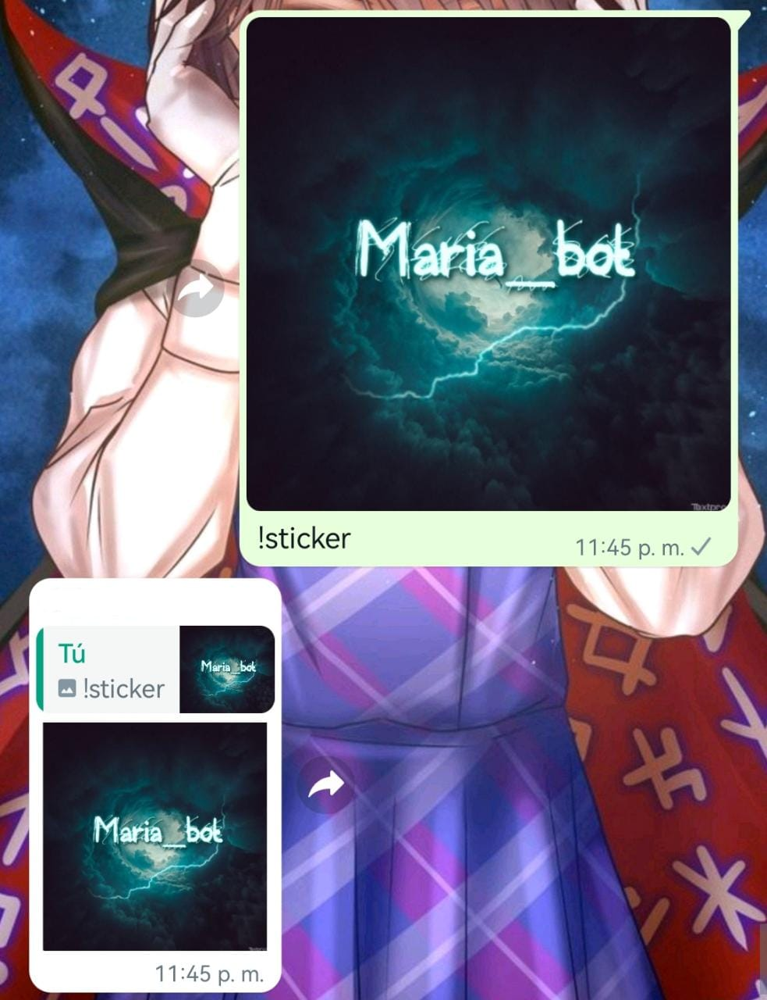
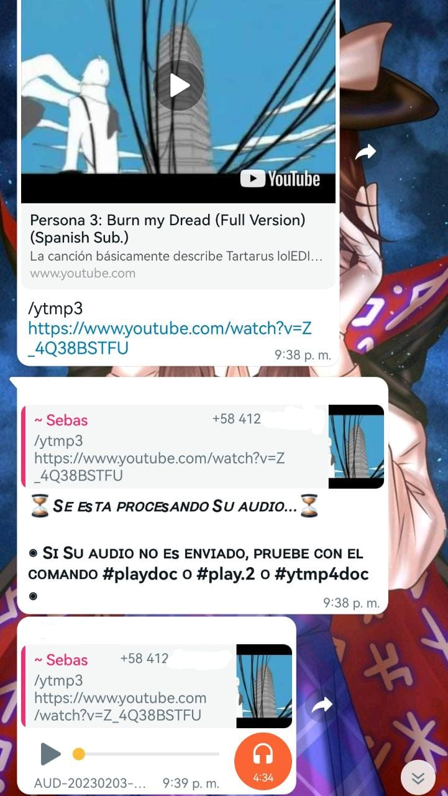
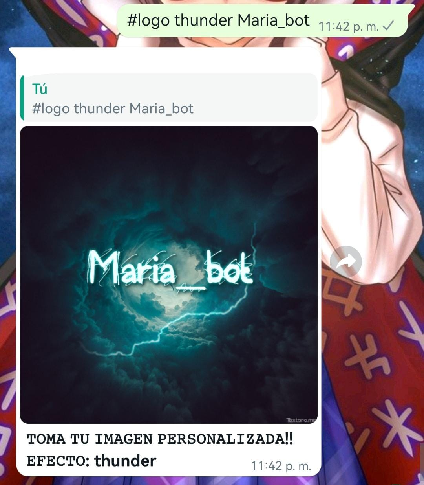
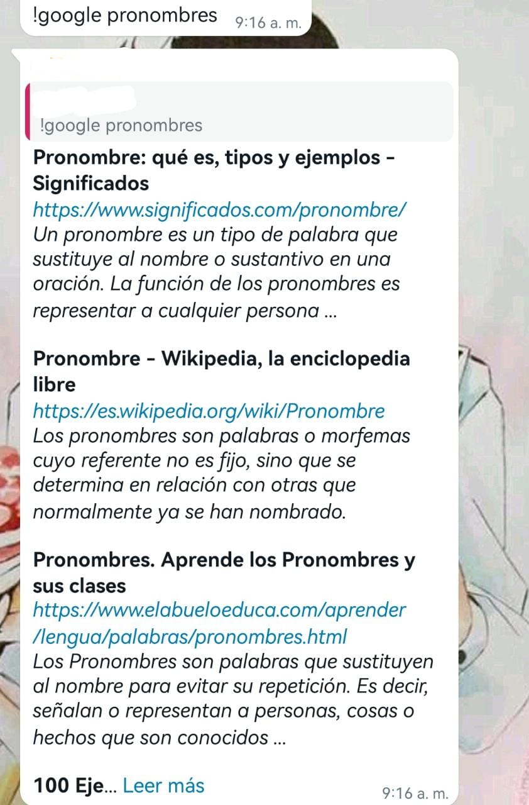
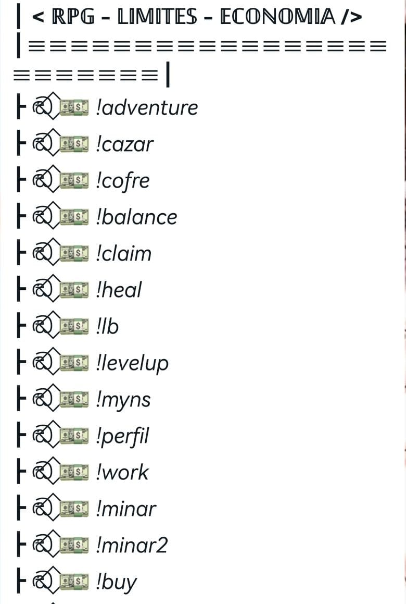

Este es un bot exclusivo de Whatsapp
El numero de telefono es: +51 914 541 962
el bot pose un menu muy extenso
entre sus opciones estan
Creacion de stickers desde imagenes, gifs e imagenes
Puedes descargar videos de YT, TW, entre otros
Tambien puede crear logos con la oracion que tu tengas :3
Puede buscar informacion directamente en google y mas
Contiene un sistema de economia que funciona con todos los usuarios del bot
Tiene funciones exclusivas de el creador y los administradores de los grupos